Se abordarán tres métodos de solución para problemas de programación lineal. El primero es el método gráfico, el cual es bastante sencillo y fácil de implementar, con la desventaja de que solo funciona para problemas de dos variables; el segundo será el método Símplex, el cual tiene algunas variantes y funciona para cualquier problema, aunque resulta ser largo y por ende, proclive a errores; por último, se verá la solución mediante el programa informático R.
Para mostrar en qué consiste el método gráfico, veamos una serie de ejercicios de ejemplo:
El problema tendrá una solución única cuando un solo punto del área factible es la solución óptima. Ese punto óptimo debe ser un vértice del área factible.
Una empresa fabrica bibliotecas y escritorios, con precios de venta por unidad de \(\$9,000\) y \(\$10,000\), respectivamente. Para efectuar la producción, la empresa cuenta con una disponibilidad mensual de 700 metros de madera, 800 metros de tubo y 900 pliegos de papel-lija. Se sabe que una biblioteca consume 7 metros de madera, 10 metros de tubo y 6 pliegos de papel-lija; mientras el escritorio necesita 10 metros de madera, 8 metros de tubo y 15 pliegos de papel-lija. ¿Cuántas bibliotecas y cuántos escritorios debe fabricar si desea el ingreso máximo?
Este problema puede resolverse con el método gráfico, ya que contiene solo dos variables.
\[ max:Z=9,000x+10,000y\\ \ \\ sujeto\ a:\\ 7x+10y\leq700\\ 10x+8y\leq800\\ 6x+15y\leq900 \]
\[ Para\ x=0:\\ 10y=700\\ y=\frac{700}{10}\\ y=70\\ Coordenada\ de \ cruce: (0,70) \]
Esto nos da el punto de cruce de la línea con el eje \(x\): \((0,70)\). Hacemos lo mismo pero con la otra combinación restante, otra variable nula y el despeje de la que queda:
\[ Para\ y=0:\\ 7x=700\\ x=\frac{700}{7}\\ x=100\\ Coordenada\ de \ cruce: (100,0) \] Siguiendo la misma lógica, obtenemos todos los pares de puntos que representen los cruces de las expresiones con los ejes. Se recomienda hacer esto primero para conocer el tamaño del plano cartesiano que deberemos dibujar en el paso siguiente.
Para la segunda restricción tendremos las coordenadas o puntos en \((0,100)\) y en \((80,0)\). Para la tercera, los puntos son \((0,60)\) y \((150,0)\). Con todos los puntos obtenidos, comparamos sus valores en \(x\) y en \(y\), para saber cuál es el mayor. Resulta ser \(150\) para \(x\) y \(100\) para \(y\). Por lo tanto, el plano debe superar un poco \(150\) en el eje horizontal y \(100\) en el eje vertical, partiendo siempre desde el origen -debido precisamente a que las variables solo pueden ser positivas en el resultado-.
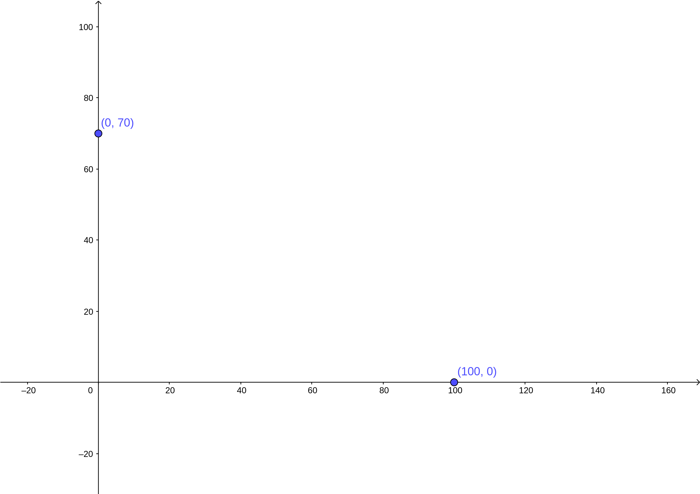
Unimos el par de puntos con una línea recta:
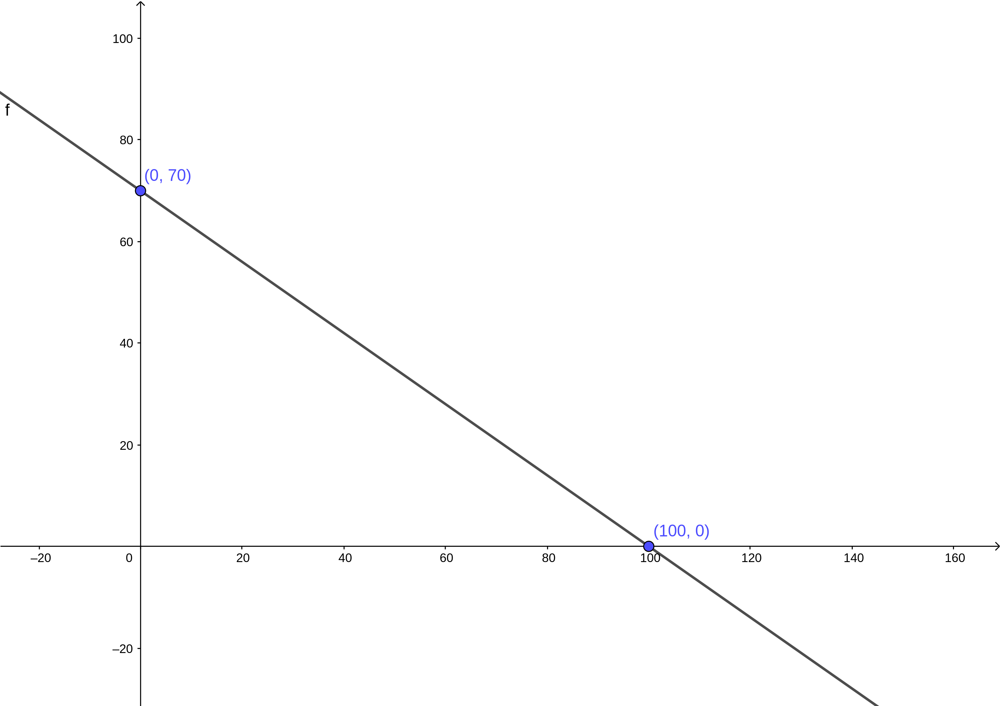
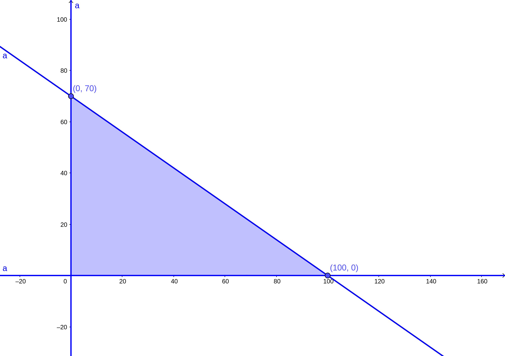
Las desigualdades a las que nos referimos las identificamos de la siguiente manera:
Y los unimos:
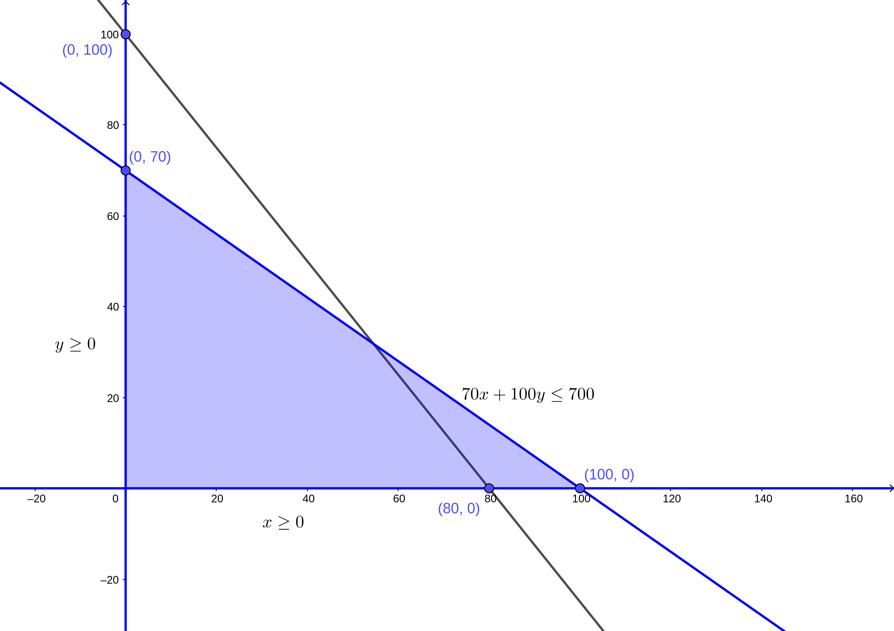
Aquí podemos notar algo muy importante. La nueva línea recta corta la zona factible y en apariencia crea otro trozo de la misma. Se debe recalcar que la zona factible solo puede ser limitada por los ejes del plano y líneas rectas, por lo que no debe ser atravesada por nada más. En este caso, el área que la nueva línea recta ha cortado se elimina de la propia zona factible. ¿Cuál área de la zona factible se eliminará? Como la nueva recta representa otra restricción del tipo \(\leq\), entonces el área más lejana al origen del plano es la que se elimina de la zona factible, quedando ésta de la siguiente manera:
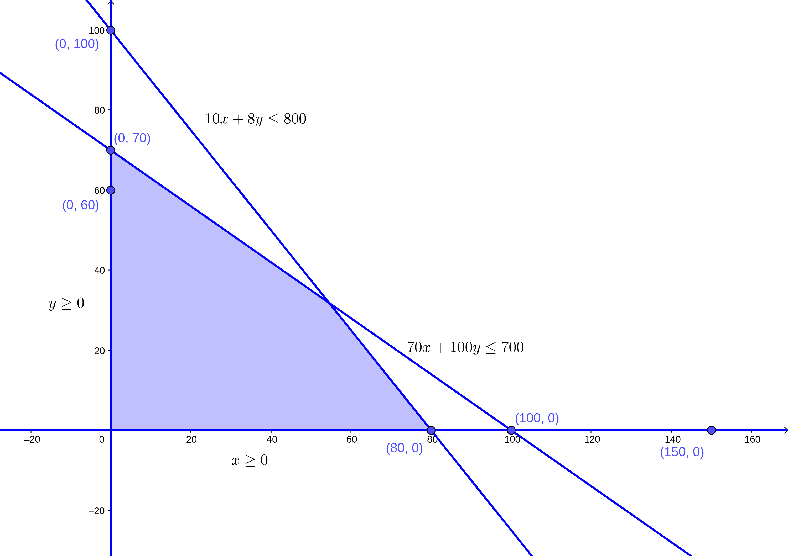
Trazamos la recta resultante:
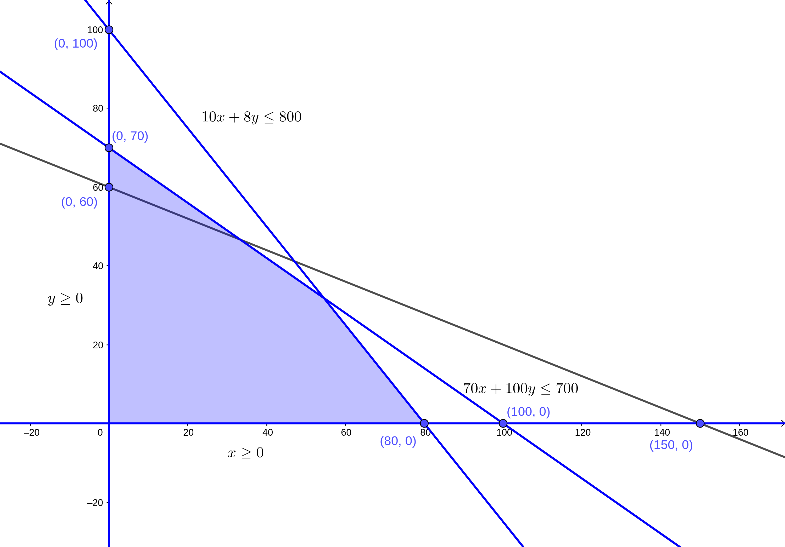
Definimos la nueva zona factible:
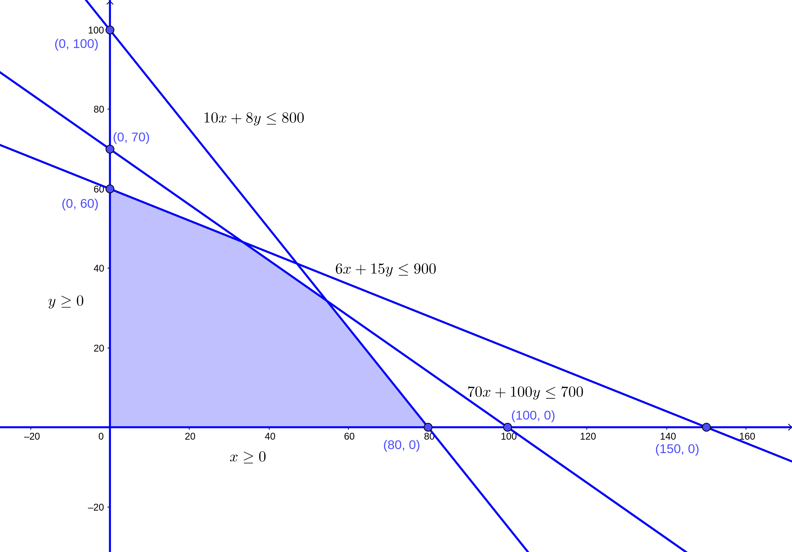
Podemos hacer un acercamiento a la zona factible:
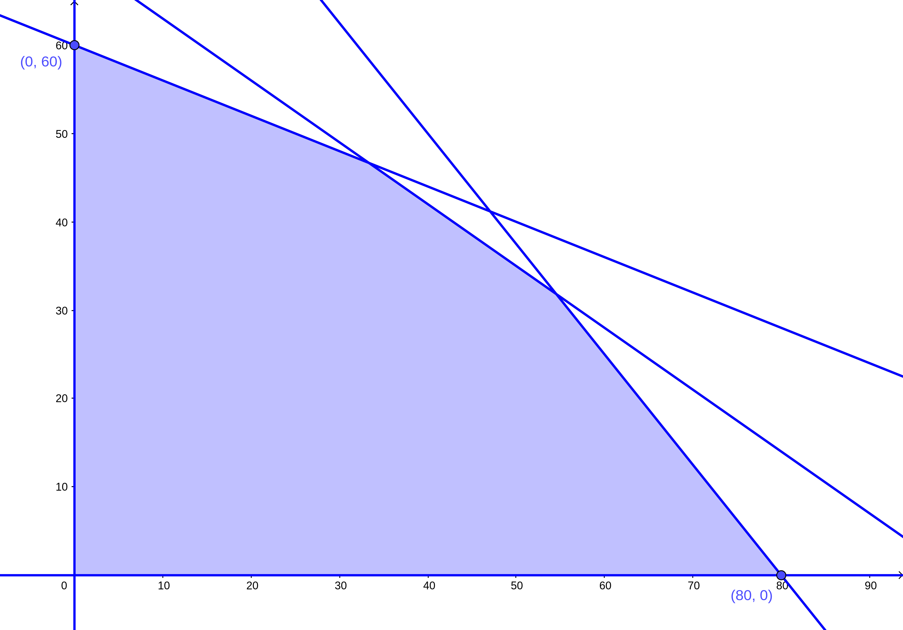
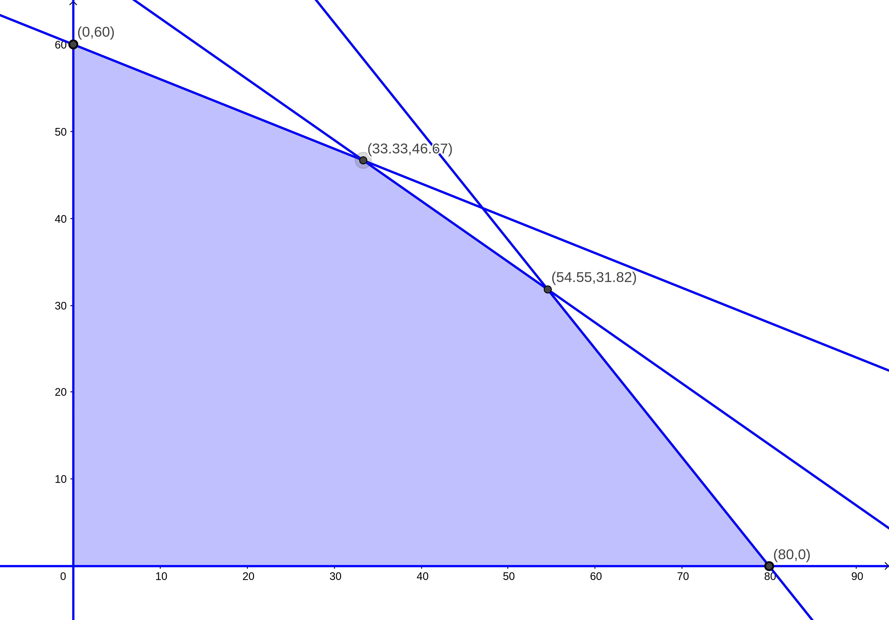
\[ Z_1=9,000(0)+10,000(60)=0+600,000 \]
Segundo vértice:
\[ Z_2=9,000(33.33)+10,000(46.67)=300,000+466,666.67=766,666.67 \]
Tercer vértice: \[ Z_3=9,000(54.55)+10,000(31.82)=490,950+318200=809,150 \]
Cuarto vértice:
\[ Z_4=9,000(80)+10,000(0)=720,000 \]
El valor más alto resulta ser el del tercer vértice: \(\$809,150\). Este punto es la solución óptima del problema.
Una solución óptima múltiple ocurre cuando hay por lo menos dos vértices cuya sustitución en la función objetivo dan el máximo valor posible. A continuación veamos un ejercicio que lo ejemplifica.
Usted dispone semanalmente para la producción de puertas y ventanas con 350 metros de lámina y 360 metros de ángulo. Cada puerta aporta \(\$70\) a las utilidades, mientras cada ventana aporta \(\$50\) por unidad. Cada puerta requiere 7 metros de lámina y 4 metros de ángulo. Cada ventana requiere 5 metros de lámina y 9 de ángulo. ¿Qué cantidad debe fabricar de cada artículo si se indica que máximo podrá vender 40 puertas?
Primero construiremos el modelo, cuyas variables resultan ser \(x\) para la cantidad de puertas fabricadas y \(y\) para la de las ventanas. La función objetivo se refiere a la maximización de las utilidades y cada restricción se refiere a un recurso específico. En este caso, se agrega una restricción que tiene que ver más con pronósticos de ventas que con lo funcional de un recurso limitado: el hecho de que solo podrá vender hasta un máximo de 40 puertas. El modelo resultante es el siguiente:
\[ max: Z=70x+50y\\ \ \\ sujeto \ a:\\ 7x+5y\leq350\\ 4x+9y\leq360\\ x\leq40\\ x,y\geq0 \]
El proceso para resolver el problema mediante gráficas es el mismo que en el problema anterior, con la salvedad de que se presenta una restricción univariable: \(x\leq40\). Para esta restricción no es necesario encontrar sus puntos de cruce con algún eje. En realidad, se cruza solamente con el eje \(x\) precisamente en el punto 40 del mismo. La zona factible que le corresponde se dirige también hacia el origen, quedando así:
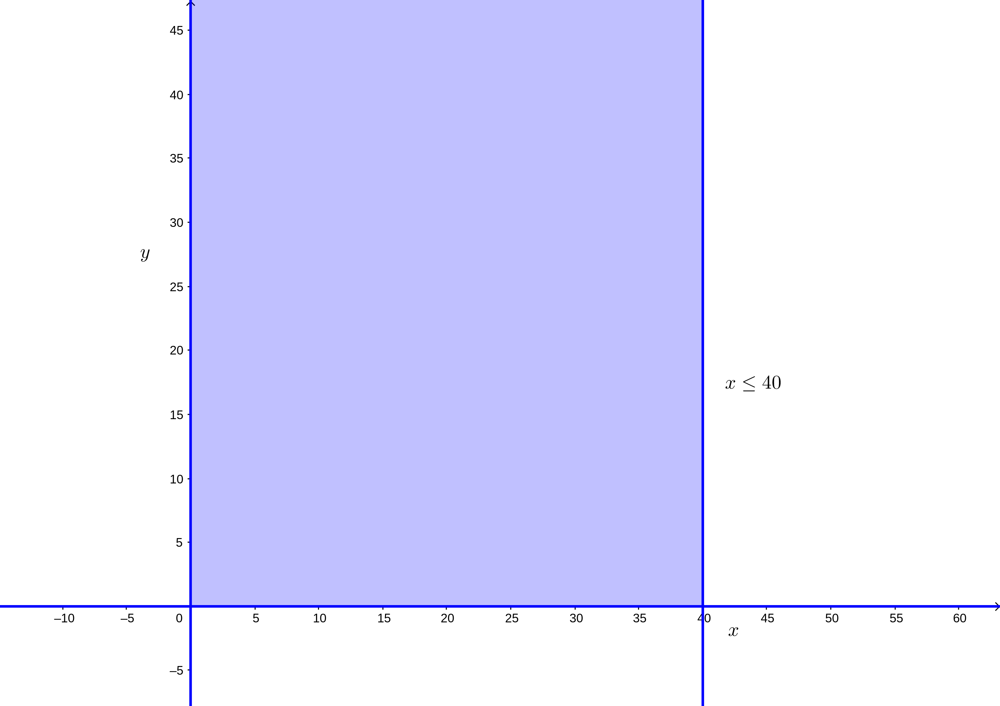
Mientras tanto, las demás restricciones las trazamos de manera similar al ejemplo anterior, quedando nuestro gráfico de la siguiente manera:
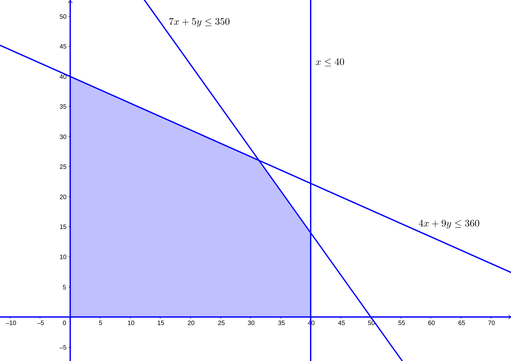
Trazamos los puntos vértice:
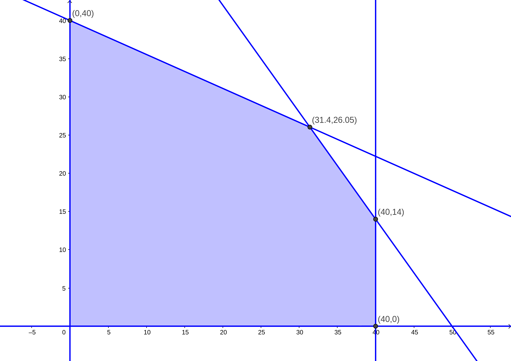
Si sustituimos todos los puntos en la función objetivo tendremos exactamente el mismo resultado tanto en el punto \((31.4,26.04)\) como en el punto \((40,14)\). Dicho resultado es de \(\$3,500\) en la función objetivo. Asi que no importa cual de estas dos cantidades fabriquemos, obtendremos la mayor ganancia.
Una fábrica de artesanías elabora bolsos y chamarras. La venta de un bolso aporta \(\$2,000\) y consume 5 horas de mano de obra; mientras la chamarra aporta \(\$3,000\) y consume 9 horas. Se deben consumir al menos 450 horas de mano de obra por mes. ¿Cuántos bolsos y chamarras debe fabricar si sabe que mínimo venderá 20 chamarras y máximo 30 bolsos?
Produce baldosas y tabletas, generando utilidades por \(\$5,000\) y \(\$4,000\) por metro cuadrado, respectivamente. Cuenta con 200 metros cuadrados de arena y 240 metros cuadrados de cemento por semana. ¿Cuánto debe fabricar si para un metro cuadrado de baldosas requiere 4 metros cuadrados de arena y 3 de cemento; mientras que para las tabletas necesita 5 metros cuadrados de arena y 8 de cemento? Considere que tiene garantizada la venta de al menos 50 metros cuadrados de tableta.
Una empresa dedicada a criar caballos ha establecido que es necesario suministrar diariamente a cada uno un mínimo de 200mg de vitamina A, un mínimo de 160mg de vitamina B y un mínimo de 150mg de vitamina C. Los animales son alimentados con matas de pasto y mineral, los cuales cuestan \(\$300\) por mata y \(\$500\) por libra de mineral. ¿Qué cantidad de cada alimento debe suministrarse a cada caballo diariamente? Se sabe que una mata de pasto aporta 4mg de vitamina A, 2mg de vitamina B y 5mg de vitamina C; mientras que la libra de mineral aporta 5mg de vitamina A, 8mg de vitamina B y 3mg de vitamina C.
En este caso el modelo es un poco diferente a los anteriores. Por principio de cuentas, se trata de minimizar costos, asi que podemos esperar que muchas restricciones sean del tipo \(\leq\), aunque eso sí, no es regla que deban ser así. Podemos distinguir que tenemos dos variables, las matas de pasto que serán \(x\) y el mineral que será \(y\). Pasamos a modelar el caso, quedando de la siguiente manera:
\[ min:Z=300x+500y\\ \ \\ sujeto\ a:\\ Vitamina\ A:\ 4x+5y\geq200\\ Vitamina\ B:\ 2x+8y\geq160\\ Vitamina\ C:\ 5x+3y\geq150\\ x,y\geq0 \]
El método gráfico se lleva a cabo bajo la misma lógica explicada en los problemas anteriores, con la excepción de que las restricciones cuya desigualdad sea del tipo \(\geq\) implican una zona factible del lado de la recta lejano al origen del plano. Por ejemplo, veamos cómo queda la línea representativa de la primera restricción:
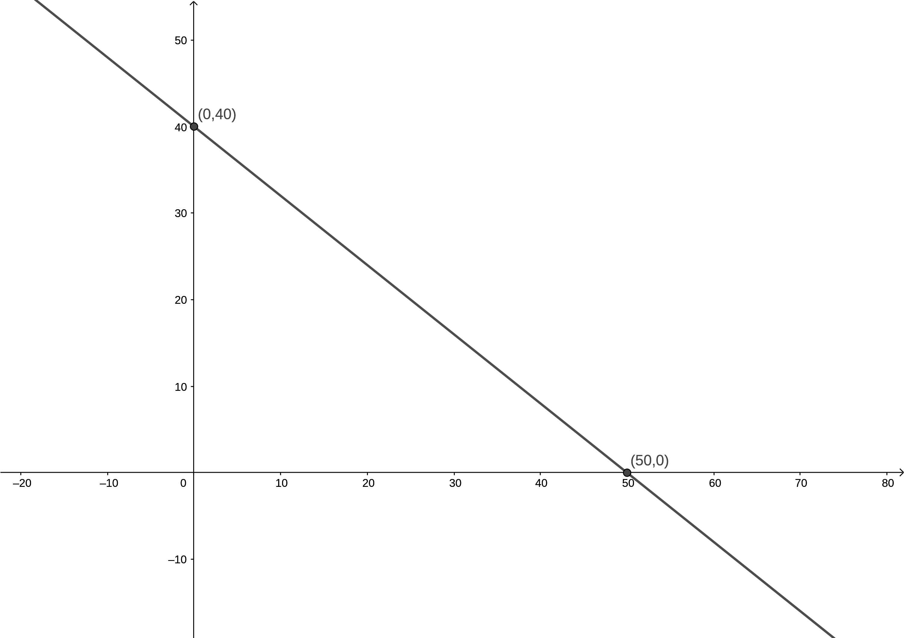
La zona factible debe quedar del lado opuesto al origen del plano, como si estuviera pues a la derecha de la línea, quedando como en la siguiente imagen:
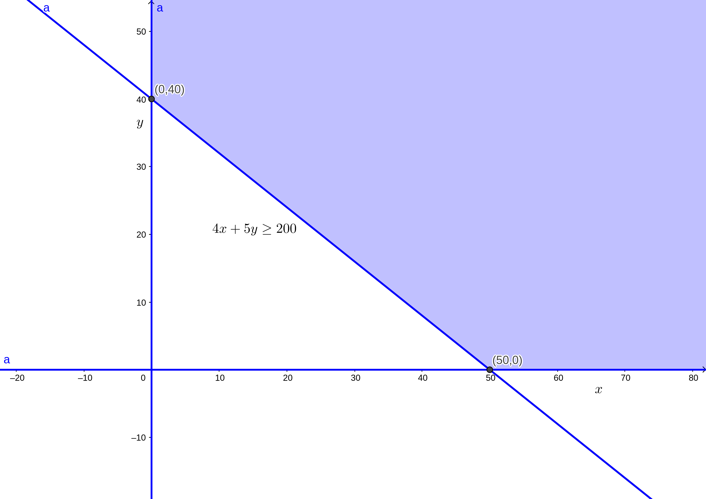
Con todo lo anterior en mente, trazamos las desigualdades y los puntos vértice posteriores. El gráfico completo quedaría así:
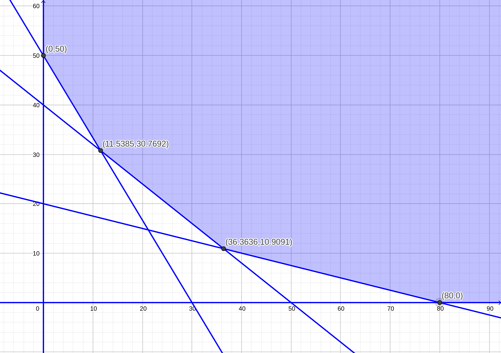
La solución se encuentra en el vértice cuyos valores en \(x\) y \(y\), al ser sustituidos en la función objetivo, nos den el valor mínimo. Sustituyamos los resultados:
\[ Z_1=300(0) +500(50)=0+25000=25000\\ Z_2=300(11.5385)+500(30.7692)=3461.55+15384.6=18846.15\\ Z_3=300(36.3636)+500(10.9091)=10909.08+5454.55=16363.63\\ Z_4=300(80)+500(0)=24000+0=24000 \]
Con base en estos resultados, podemos concluir que la mejor combinación de matas de pasto y mineral es aquella que nos asegura un costo mínimo de \(\$16,363.63\), consistiendo ésta de 36.3636 matas de pasto y 10.9091 unidades de mineral.
Una empresa de combustibles produce gasolina y ACPM a un costo de \(\$20.00\) y \(\$40.00\) respectivamente. Para producir un galón de gasolina se requieren 4 horas-hombre, 6 horas-máquina y 8 litros de petróleo. Para cada galón de ACPM son necesarias 8 horas-hombre, 5 horas-máquina y 10 litros de petróleo. Deben consumirse al menos 320 horas-hombre y 300 horas-máquina al mes. ¿Qué cantidad debe producirse si se cuenta con 800 litros mensuales de petróleo?
La industria siderúrgica un tipo de aleación especial compuesta por sílice y aluminio; los cuales compra a \(\$30.00\) y \(\$50.00\) por kilogramo, respectivamente. La utilización de un kilogramo de sílice requiere el consumo de 5 miligramos de material radioactivo y dos litros de agua; por otro lado, producir un kilogramo de aluminio requiere consumir 4 miligramos de material radioactivo y produce 3 litros de agua. Por políticas de la empresa, deben consumirse al menos 20 miligramos de material radioactivo y se cuenta con 6 litros de agua. ¿Qué cantidad de sílice y aluminio se debe utilizar si se sabe que como máximo deben utilizarse 8 kilogramos de sílice y que el gobierno subsidia con \(\$150.00\) la utilización de cada kilogramo de aluminio?
Una empresa zapatera ha establecido que venderá como máximo 30 pares y como mínimo 40 pares de tenis. Para la producción de estos artículos se cuenta con una disponibilidad de mensual de 180 metros de cuero se ha establecido que el costo de producción de cada par de zapatos es de \(\$500.00\) y de cada par de tenis de \(\$400\).
Una empresa produce vidrios florentinos y martillados con un costo de \(\$200.00\) y \(\$400.00\) por unidad, respectivamente. Se cuenta con una disponibilidad semanal de 240 horas-hombre, 420 horas-horno y 480 unidades de materia prima. Establezca qué cantidad de cada tipo se debe fabricar a fin de minimizar el costo de producción si se sabe que para cada vidrio florentino se requieren 8 horas-hombre, 6 horas en el horno y 16 unidades de materia prima; mientras que para el vidrio martillado son necesarias 3 horas-hombre, 7 horas-horno y 6 unidades de materia prima. Se estima que se venderán mínimo 40 vidrios entre los dos tipos.
Para resolver un modelo de programación lineal mediante el método simplex, se deben tomar en cuenta los siguientes pasos:
| FILA | BASE | Z | \(X_1\) | \(X_2\) | \(X_3\) | … | \(X_n\) | \(H_1\) | \(H_2\) | \(H_3\) | … | \(H_n\) | CTE |
|---|---|---|---|---|---|---|---|---|---|---|---|---|---|
| 0 | - | 1 | \(a_{0i}\) | \(a_{0i+1}\) | \(a_{0i+2}\) | … | \(a_{0n}\) | 0 | 0 | 0 | … | 0 | 0 |
| 1 | \(H_1\) | 0 | \(a_{1i}\) | \(a_{1i+1}\) | \(a_{1i+2}\) | … | \(a_{1n}\) | 1 | 0 | 0 | … | 0 | m |
| 2 | \(H_2\) | 0 | \(a_{2i}\) | \(a_{2i+1}\) | \(a_{2i+2}\) | … | \(a_{2n}\) | 0 | 1 | 0 | … | 0 | n |
| 3 | \(H_3\) | 0 | \(a_{3i}\) | \(a_{3i+1}\) | \(a_{3i+2}\) | … | \(a_{3n}\) | 0 | 0 | 1 | … | 0 | o |
| … | … | 0 | … | … | … | … | … | … | … | … | … | … | p |
| n | \(H_n\) | 0 | \(a_{ni}\) | \(a_{ni+1}\) | \(a_{ni+2}\) | … | \(a_{nn}\) | 0 | 0 | 0 | … | 1 | q |
Retomemos el problema de la misma sección correspondiente al método gráfico, aprovechando que ya tenemos formulado el modelo y conocemos su resultado. Cambiemos las \(x\) por \(x_1\) y las \(y\) por \(x_2\):
\[ f.o.:max\ Z=9,000x_1+10,000x_2\\ \\ \ \\ s.a.\\ 7x_1+10x_2\leq700\\ 10x_1+8x_2\leq800\\ 6x_1+15x_2\leq900\\ x_1,x_2\geq0 \]
Reformulemos al modo simplex el modelo. Comencemos con las restricciones, las cuales son todas del tipo \(\leq\). Por lo tanto se agregarán variables de holgura:
\[ 7x_1+10x_2+H_1=700\\ 10x_1+8x_2+H_2=800\\ 6x_1+15x_2+H_3=900 \]
Ahora nos pasamos a la función objetivo, a la cual hay que agregarle las variables de holgura con coeficientes nulos:
\[ Z=9,000x_1+10,000x_2+0H_1+0H_2+0H_3 \]
Y enseguida despejarla: \[ Z-9,000x_1-10,000x_2+0H_1+0H_2+0H_3=0 \]
Nuestro modelo completo y preparado para simplex quedaría así:
\[ Z-9,000x_1-10,000x_2+0H_1+0H_2+0H_3=0\\ 7x_1+10x_2+H_1=700\\ 10x_1+8x_2+H_2=800\\ 6x_1+15x_2+H_3=900 \]
Construyamos ahora el tablero simplex únicamente con los coeficientes del modelo:
| FILA | BASE | Z | \(X_1\) | \(X_2\) | \(H_1\) | \(H_2\) | \(H_3\) | CTE |
|---|---|---|---|---|---|---|---|---|
| 0 | - | 1 | -9,000 | -10,000 | 0 | 0 | 0 | 0 |
| 1 | \(H_1\) | 0 | 7 | 10 | 1 | 0 | 0 | 700 |
| 2 | \(H_2\) | 0 | 10 | 8 | 0 | 1 | 0 | 800 |
| 3 | \(H_3\) | 0 | 6 | 15 | 0 | 0 | 1 | 900 |
## Z X1 X2 H1 H2 H3 CTE
## 1 1 -9000 -10000 0 0 0 0
## 2 0 7 10 1 0 0 700
## 3 0 10 8 0 1 0 800
## 4 0 6 15 0 0 1 900Pasemos a resolverlo. Lo primero es verificar si la solución actual es la óptima, notando que el tener valores negativos en la función objetivo implica que no es así.
Lo segundo es determinar la _variable de entrada__, es decir, la que entrará a la base. Para ello seleccionamos el coeficiente más negativo de la fila 0: -10,000. Este pertenece a \(x_2\), por lo tanto, su columna se vuelve ahora la columna pivote.
Lo tercero es definir cuál variable de base saldrá de la misma. Para ello tomamos el coeficiente de la columna CTE y lo dividimos entre el coeficiente que le corresponde de la columna pivote (\(x_2\)), es decir, dividimos 700 entre 10; 800 entre 8 y 900 entre 15:
## [1] 0 70 100 60Los resultados obtenidos son los anteriores. Se ignoran negativos y nulos, por lo que el menor es 60. Es el valor correspondiente a la fila 3, es decir, \(H_3\), lo cual la convierte en la fila pivote. Con esto, la tabla se modifica para dar cabida a la nueva variable básica, quitando la que deja de serlo:
| FILA | BASE | Z | \(X_1\) | \(X_2\) | \(H_1\) | \(H_2\) | \(H_3\) | CTE |
|---|---|---|---|---|---|---|---|---|
| 0 | - | 1 | -9,000 | -10,000 | 0 | 0 | 0 | 0 |
| 1 | \(H_1\) | 0 | 7 | 10 | 1 | 0 | 0 | 700 |
| 2 | \(H_2\) | 0 | 10 | 8 | 0 | 1 | 0 | 800 |
| 3 | \(x_2\) | 0 | 6 | 15 | 0 | 0 | 1 | 900 |
Nuestra atención debe centrarse ahora en el punto de cruce de la fila pivote con la columna pivote. Este punto, o elemento pasa a ser llamado elemento pivote y sobre este se centra el simplex, al menos en esta etapa.
Debemos volver unitario al elemento pivote. Para ello, tomamos toda la fila 3 y la dividimos entre 15:
## Z X1 X2 H1 H2 H3 CTE
## 4 0 0.4 1 0 0 0.06666667 60Modificando el tablero para quedar de la siguiente manera, ya con la fila 3 actualizada:
| FILA | BASE | Z | \(X_1\) | \(X_2\) | \(H_1\) | \(H_2\) | \(H_3\) | CTE |
|---|---|---|---|---|---|---|---|---|
| 0 | - | 1 | -9,000 | -10,000 | 0 | 0 | 0 | 0 |
| 1 | \(H_1\) | 0 | 7 | 10 | 1 | 0 | 0 | 700 |
| 2 | \(H_2\) | 0 | 10 | 8 | 0 | 1 | 0 | 800 |
| 3 | \(x_2\) | 0 | 0.4 | 1 | 0 | 0 | 0.0667 | 60 |
Ahora debemos volver nulo todos los valores de la columna pivote, con excepción del elemento que acabamos de volver unitario. Para ello, tomamos la fila pivote y la multiplicamos por el opuesto aditivo del número que queremos eliminar. Comencemos por el elemento de la fila 0: -10,000. Para eliminarlo, multiplicamos la fila 3 por (10,000), para que al sumarse, se eliminen:
f0## Z X1 X2 H1 H2 H3 CTE
## 1 1 -9000 -10000 0 0 0 010000*f3## Z X1 X2 H1 H2 H3 CTE
## 4 0 4000 10000 0 0 666.6667 6e+05f0 <- f0+10000*f3
f0## Z X1 X2 H1 H2 H3 CTE
## 1 1 -5000 0 0 0 666.6667 6e+05Ahora eliminemos el 10 que se encuentra en la fila 1. Lo conseguimos multiplicando la fila 3 por (-10) y sumándolo a la fila 1:
f1## Z X1 X2 H1 H2 H3 CTE
## 2 0 7 10 1 0 0 700-10*f3## Z X1 X2 H1 H2 H3 CTE
## 4 0 -4 -10 0 0 -0.6666667 -600f1 <- f1+(-10*f3)
f1## Z X1 X2 H1 H2 H3 CTE
## 2 0 3 0 1 0 -0.6666667 100Enseguida vamos por el elemento que queda en la columna pivote sin ser nulo, el de la fila 2, el cual es un 8. Para cancelarlo, multiplicaremos la fila 3 por (-8) y la sumaremos a la fila 2:
f2## Z X1 X2 H1 H2 H3 CTE
## 3 0 10 8 0 1 0 800-8*f3## Z X1 X2 H1 H2 H3 CTE
## 4 0 -3.2 -8 0 0 -0.5333333 -480f2 <- f2+(-8*f3)
f2## Z X1 X2 H1 H2 H3 CTE
## 3 0 6.8 0 0 1 -0.5333333 320Procedemos a actualizar nuestro tablero simplex:
| FILA | BASE | Z | \(X_1\) | \(X_2\) | \(H_1\) | \(H_2\) | \(H_3\) | CTE |
|---|---|---|---|---|---|---|---|---|
| 0 | - | 1 | -5,000 | 0 | 0 | 0 | 666.6667 | 600,000 |
| 1 | \(H_1\) | 0 | 3 | 0 | 1 | 0 | -0.6667 | 100 |
| 2 | \(H_2\) | 0 | 6.8 | 0 | 0 | 1 | -0.5333 | 320 |
| 3 | \(x_2\) | 0 | 0.4 | 1 | 0 | 0 | 0.0667 | 60 |
Verificamos si ya encontramos la solución óptima. La presencia de (-5,000) en la columna \(x1\) indica lo contrario. Por lo tanto, hay que repetir el ciclo. Seleccionamos dicha columna como pivote y buscamos ahora la variable de salida o fila pivote:
f1[7]/f1[2]## CTE
## 2 33.33333f2[7]/f2[2]## CTE
## 3 47.05882f3[7]/f3[2]## CTE
## 4 150El cociente de f1 resulta ser el menor. Por lo tanto, la variable de salida es \(H_1\), convirtiendo a la f1 en la fila pivote. El siguiente paso pues, es volver unitario al elemento pivote:
| FILA | BASE | Z | \(X_1\) | \(X_2\) | \(H_1\) | \(H_2\) | \(H_3\) | CTE |
|---|---|---|---|---|---|---|---|---|
| 0 | - | 1 | -5,000 | 0 | 0 | 0 | 666.6667 | 600,000 |
| 1 | \(x_1\) | 0 | 3 | 0 | 1 | 0 | -0.6667 | 100 |
| 2 | \(H_2\) | 0 | 6.8 | 0 | 0 | 1 | -0.5333 | 320 |
| 3 | \(x_2\) | 0 | 0.4 | 1 | 0 | 0 | 0.0667 | 60 |
f1 <- f1/3
f1## Z X1 X2 H1 H2 H3 CTE
## 2 0 1 0 0.3333333 0 -0.2222222 33.33333Actualizamos el tablero:
| FILA | BASE | Z | \(X_1\) | \(X_2\) | \(H_1\) | \(H_2\) | \(H_3\) | CTE |
|---|---|---|---|---|---|---|---|---|
| 0 | - | 1 | -5,000 | 0 | 0 | 0 | 666.6667 | 600,000 |
| 1 | \(x_1\) | 0 | 1 | 0 | 0.3333 | 0 | -0.2222 | 33.3333 |
| 2 | \(H_2\) | 0 | 6.8 | 0 | 0 | 1 | -0.5333 | 320 |
| 3 | \(x_2\) | 0 | 0.4 | 1 | 0 | 0 | 0.0667 | 60 |
Comencemos pues. Hay que volver nulos todos los demás elementos de la columna pivote. Comenzamos por la fila 0, sumándole el producto de la fila 1 por (5,000):
f0## Z X1 X2 H1 H2 H3 CTE
## 1 1 -5000 0 0 0 666.6667 6e+055000*f1## Z X1 X2 H1 H2 H3 CTE
## 2 0 5000 0 1666.667 0 -1111.111 166666.7f0 <- f0+5000*f1
f0## Z X1 X2 H1 H2 H3 CTE
## 1 1 0 0 1666.667 0 -444.4444 766666.7Hagamos nulo al elemento de la siguiente fila, la fila 2:
f2## Z X1 X2 H1 H2 H3 CTE
## 3 0 6.8 0 0 1 -0.5333333 320-6.8*f1## Z X1 X2 H1 H2 H3 CTE
## 2 0 -6.8 0 -2.266667 0 1.511111 -226.6667f2 <- f2+(-6.8*f1)
f2## Z X1 X2 H1 H2 H3 CTE
## 3 0 0 0 -2.266667 1 0.9777778 93.33333Ahora al de la fila 3:
f3## Z X1 X2 H1 H2 H3 CTE
## 4 0 0.4 1 0 0 0.06666667 60-0.4*f1## Z X1 X2 H1 H2 H3 CTE
## 2 0 -0.4 0 -0.1333333 0 0.08888889 -13.33333f3 <- f3+(-0.4*f1)
f3## Z X1 X2 H1 H2 H3 CTE
## 4 0 0 1 -0.1333333 0 0.1555556 46.66667Actualicemos el tablero:
| FILA | BASE | Z | \(X_1\) | \(X_2\) | \(H_1\) | \(H_2\) | \(H_3\) | CTE |
|---|---|---|---|---|---|---|---|---|
| 0 | - | 1 | 0 | 0 | 1,666.6667 | 0 | -444.4444 | 766,666.7 |
| 1 | \(x_1\) | 0 | 1 | 0 | 0.3333 | 0 | -0.2222 | 33.3333 |
| 2 | \(H_2\) | 0 | 0 | 0 | -2.2667 | 1 | 0.9778 | 93.3333 |
| 3 | \(x_2\) | 0 | 0 | 1 | -0.1333 | 0 | 0.1556 | 46.6667 |
De nuevo podemos notar que no hemos terminado el método, ya que aún tenemos un valor negativo en la función objetivo: \(H_3\). Eso implica que debemos tomar su columna como pivote y definir cuál variable saldrá de base:
f1[7]/f1[6]## CTE
## 2 -150f2[7]/f2[6]## CTE
## 3 95.45455f3[7]/f3[6]## CTE
## 4 300Ignorando el cociente negativo, el menor es el de la fila 2. Por lo tanto, actualizamos el tablero con la variable de entrada en la columna Base y resaltando el elemento pivote:
| FILA | BASE | Z | \(X_1\) | \(X_2\) | \(H_1\) | \(H_2\) | \(H_3\) | CTE |
|---|---|---|---|---|---|---|---|---|
| 0 | - | 1 | 0 | 0 | 1,666.6667 | 0 | -444.4444 | 766,666.7 |
| 1 | \(x_1\) | 0 | 1 | 0 | 0.3333 | 0 | -0.2222 | 33.3333 |
| 2 | \(H_3\) | 0 | 0 | 0 | -2.2667 | 1 | 0.9778 | 93.3333 |
| 3 | \(x_2\) | 0 | 0 | 1 | -0.1333 | 0 | 0.1556 | 46.6667 |
Obtenemos la nueva fila 2, volviendo unitario al pivote:
f2.p <- f2[6]
f2.p## H3
## 3 0.9777778f2 <- f2/0.9777778
f2## Z X1 X2 H1 H2 H3 CTE
## 3 0 0 0 -2.318182 1.022727 1 95.45454| FILA | BASE | Z | \(X_1\) | \(X_2\) | \(H_1\) | \(H_2\) | \(H_3\) | CTE |
|---|---|---|---|---|---|---|---|---|
| 0 | - | 1 | 0 | 0 | 1,666.6667 | 0 | -444.4444 | 766,666.7 |
| 1 | \(x_1\) | 0 | 1 | 0 | 0.3333 | 0 | -0.2222 | 33.3333 |
| 2 | \(H_3\) | 0 | 0 | 0 | -2.3181 | 1.0227 | 1 | 95.4545 |
| 3 | \(x_2\) | 0 | 0 | 1 | -0.1333 | 0 | 0.1556 | 46.6667 |
Procedemos a eliminar todos los demás elementos de la columna pivote. Comenzamos con la fila 0:
f0## Z X1 X2 H1 H2 H3 CTE
## 1 1 0 0 1666.667 0 -444.4444 766666.7444.444444*f2## Z X1 X2 H1 H2 H3 CTE
## 3 0 0 0 -1030.303 454.5454 444.4444 42424.24f0 <- f0+(444.444444*f2)
f0## Z X1 X2 H1 H2 H3 CTE
## 1 1 0 0 636.3637 454.5454 -1.054545e-05 809090.9Nótese que el valor resultante para \(H_3\) es demasiado pequeño: 0.0000105. Por lo que se considera nulo. Seguimos con la fila 1:
f1## Z X1 X2 H1 H2 H3 CTE
## 2 0 1 0 0.3333333 0 -0.2222222 33.333330.2222*f2## Z X1 X2 H1 H2 H3 CTE
## 3 0 0 0 -0.5151 0.22725 0.2222 21.21f1 <- f1+0.2222*f2
f1## Z X1 X2 H1 H2 H3 CTE
## 2 0 1 0 -0.1817667 0.22725 -2.222727e-05 54.54333Continuamos con la fila 3:
f3## Z X1 X2 H1 H2 H3 CTE
## 4 0 0 1 -0.1333333 0 0.1555556 46.66667-0.1556*f2## Z X1 X2 H1 H2 H3 CTE
## 3 0 0 0 0.3607091 -0.1591364 -0.1556 -14.85273f3 <- f3+(-0.1556*f2)
f3## Z X1 X2 H1 H2 H3 CTE
## 4 0 0 1 0.2273757 -0.1591364 -4.444091e-05 31.81394Es momento de actualizar el tablero:
| FILA | BASE | Z | \(X_1\) | \(X_2\) | \(H_1\) | \(H_2\) | \(H_3\) | CTE |
|---|---|---|---|---|---|---|---|---|
| 0 | - | 1 | 0 | 0 | 636.3637 | 454.5454 | 0 | 809,090.9 |
| 1 | \(x_1\) | 0 | 1 | 0 | -0.1817 | 0.2272 | 0 | 54.5433 |
| 2 | \(H_3\) | 0 | 0 | 0 | -2.3181 | 1.0227 | 1 | 95.4545 |
| 3 | \(x_2\) | 0 | 0 | 1 | 0.2273 | -0.1591 | 0 | 31.8139 |
Verificamos que ya hemos terminado, notando que ya no hay elementos negativos en la función objetivo o fila 0. Lo anterior implica que ya se encontró la solución óptima, la cual pasa por incluir en sí misma solo las variables que se encuentran en la columna Base, así que a partir de este momento, se consideran inválidas las columnas de \(H_1\) y \(H_2\). El tablero queda entonces como se muestra:
| FILA | BASE | Z | \(X_1\) | \(X_2\) | \(H_3\) | CTE |
|---|---|---|---|---|---|---|
| 0 | - | 1 | 0 | 0 | 0 | 809,090.9 |
| 1 | \(x_1\) | 0 | 1 | 0 | 0 | 54.5433 |
| 2 | \(H_3\) | 0 | 0 | 0 | 1 | 95.4545 |
| 3 | \(x_2\) | 0 | 0 | 1 | 0 | 31.8139 |
Como es notorio, el tablero queda compuesto prácticamente por ceros y unos, con excepción de la fila CTE que contiene los valores constantes del lado derecho de todas las restricciones. Ya podemos leerlo y saber la respuesta al problema:
La función objetivo, representada por \(Z\), es igual a 809,090.9, siendo esto el ingreso máximo que tendrá la empresa si vende las 54.5433 bibliotecas y los 31.8139 escritorios. Datos estos últimos que pueden leerse en el mismo tablero, buscando el dato en la columna CTE que le corresponde a la Base \(x_1\) y \(x_2\), respectivamente. Por otro lado, el valor de 95.4545 en \(H_3\) significa que esos son los rollos de lija que no serán utilizados. Recordemos que la tercera restricción (de donde salió la variable de holgura \(H_3\)) se refiere precisamente a rollos de papel de lija. Nótese que los resultados varían ligeramente con respecto al método gráfico, lo cual se debe a los redondeos que tuvieron que realizarse para los cálculos en dicho método.
Para dar por finalizada la unidad, abordaremos la solución del primer problema de programación lineal que se ha realizado. Hemos visto cómo resolver dicho problema por el método gráfico y por el método simplex. Ahora veremos unos cuanto comandos para resolverlo mendiante el programa estadístico R. En sí, resulta más sencillo que graficar o resolver el simplex como tal, debido a que se utiliza la capacidad de cálculo de la computadora. Sin embargo, sí que es necesario un poco de aprendizaje alterno al del modelado. Partamos del mismo problema y su modelo:
\[ f.o.:max\ Z=9,000x_1+10,000x_2\\ \\ \ \\ s.a.\\ 7x_1+10x_2\leq700\\ 10x_1+8x_2\leq800\\ 6x_1+15x_2\leq900\\ x_1,x_2\geq0 \]
Para utilizar R es necesario construir otro tablero similar al método simplex, pero no es obligatorio incluir la columna de la variable \(Z\). Basta con escribir una columna por variable, otra para la dirección de la restricción (el símbolo \(\leq\) o \(\geq\), según sea el caso) y una última para el valor constante. Por ejemplo, para este problema se construyó el siguiente tablero:
tablero <- read.table("datasets/002-lpSolve.txt", header = T)
tablero## x1 x2 dir cte
## 1 9000 10000 - 0
## 2 7 10 <= 700
## 3 10 8 <= 800
## 4 6 15 <= 900Nótense varias cosas nuevas con esto que se acaba de leer: primero, que se utilizó la variable tablero para asignarle el tablero completo. Pudimos haber utilizado cualquier nombre. Segundo, que el comando read.table funciona para «leer» el contenido de un archivo, dirección del cual se coloca dentro de comillas en primera instancia, y de paréntesis en segunda. Por último, la frase header = T se refiere a que lo que sea que tenga el archivo en la primera fila, se le indica a R que lo tome como el encabezado de las columnas. Si en dado caso no sabemos exactamente la ruta del archivo o tenemos pereza para buscarla o escribirla, podemos colocar la sentencia file.choose() en lugar de todo lo entrecomillado del comando read.table. Esto hará que aparezca la clásica ventana que nos permita buscar el archivo.
Ahora bien, debemos preparar un poco a R para resolver este tipo de problemas, ya que por defecto no contiene el paquete necesario. Para ello si estamos en RStudio nos dirigimos al menú Tools -> Install packages y en el recuadro Packages debemos escribir lpSolve. Debemos asegurarnos de que en Install from: esté seleccionado CRAN y esté seleccionado Install dependencies. Si nos encontramos en R puro (y duro), deberemos realizar esto a golpe de comando, con la sentencia que se muestra a continuación, pero sin la almohadilla (#):
# install.packages("lpSolve", dep = T)A las preguntas que aparezcan se contesta de manera afirmativa. Si solicita un país de descarga se selecciona México.
La prueba de que el paquete se ha instalado de manera correcta es que puede cargarse en R mediante:
library(lpSolve)Si no aparece ningún aviso, lpSolve se ha cargado de manera correcta. Ya podemos resolver el problema de ejemplo. Para ello, asignaremos nuevas variables con trozos del tablero que ya hemos invocado. A continuación se muestran dichas variables con los datos que se les han asignado.
Creamos la variable que representará a la función objetivo, extrayendo solamente la primera fila y las dos columnas que contienen los datos relevantes de dicha fila (esto es en realidad lo que se hizo con los números dentro de los corchetes, siendo el primero el número de fila, una coma que separa y los números de columnas en rango, de 1 a 2). A eso que extrajimos lo guardamos en la variable fo en forma de vector:
fo <- c(tablero[1,1:2])
fo## $x1
## [1] 9000
##
## $x2
## [1] 10000Enseguida creamos la variable donde estarán los coeficientes de las restricciones, seleccionando ya no como vectores a los elementos que se encuentran en el tablero englobados por las filas 2, 3 y 4; y las columnas 1 y 2.
restricciones <- tablero[2:4,1:2]
restricciones## x1 x2
## 2 7 10
## 3 10 8
## 4 6 15Creamos la variable que contendrá los signos de las restricciones con las filas 2, 3 y 4 y solo la columna 3:
direcciones <- tablero[2:4,3]
direcciones## [1] <= <= <=
## Levels: - <=Para finalizar, creamos la variable que contendrá los valores constantes de las restricciones, con las mismas filas 2, 3 y 4 y solo la última columna, la 4.
constantes <- tablero[2:4,4]
constantes## [1] 700 800 900Ya podemos resolver el problema, con el comando lp, cargado mediante lpSolve:
solucion <- lp("max", fo, restricciones, direcciones, constantes)
solucion## Success: the objective function is 809090.9solucion$solution## [1] 54.54545 31.81818Cuando ejecutamos el comando lp el programa calcula el valor de la variable solucion, la cual toma lo que vale la función objetivo. Por lo tanto, \(Z\) es igual a 809,090.9. Por otro lado, cuando ejecutamos solucion$solution estamos solicitando los valores de las variables. Nos los dan en orden, \(x_1\) primero y \(x_2\) después. Dichos valores coinciden con los resultados del método simplex: 54.54545 y 31.81818, respectivamente.